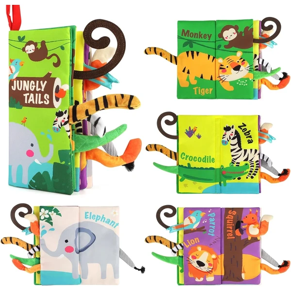
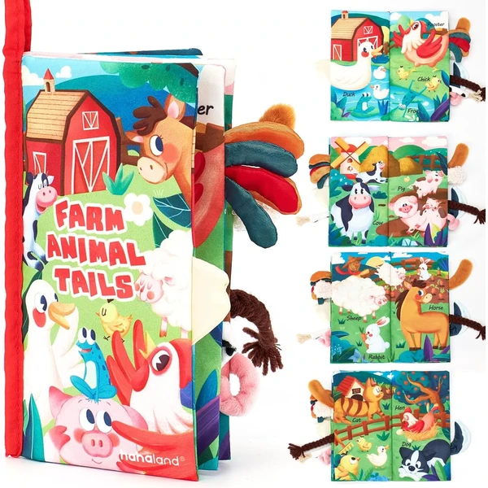
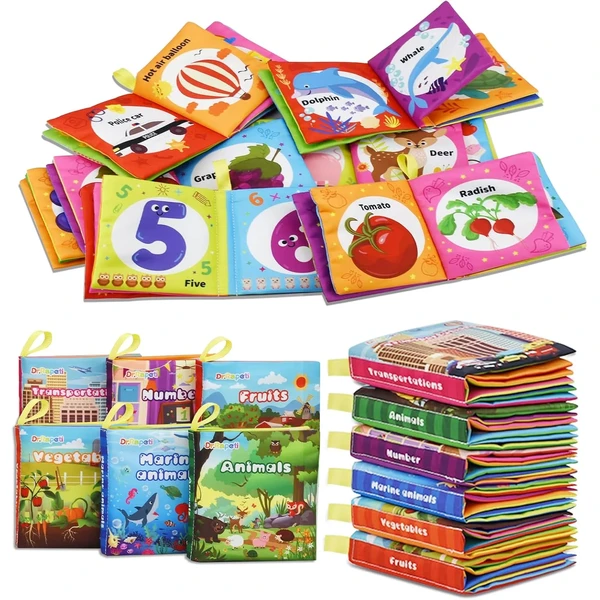
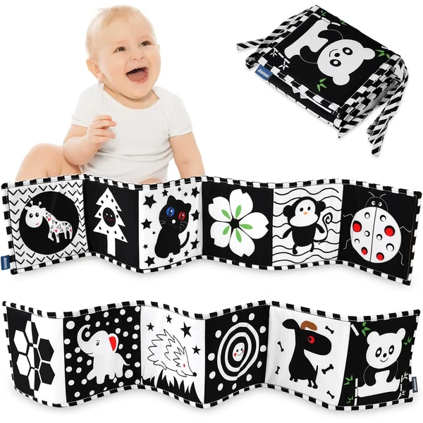
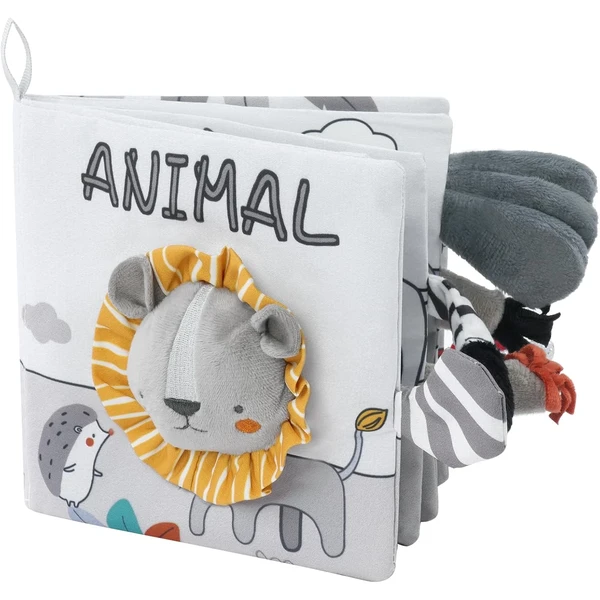
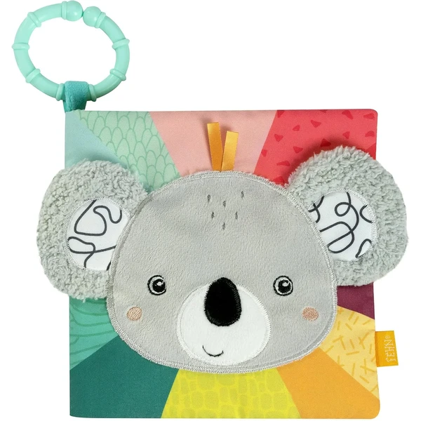
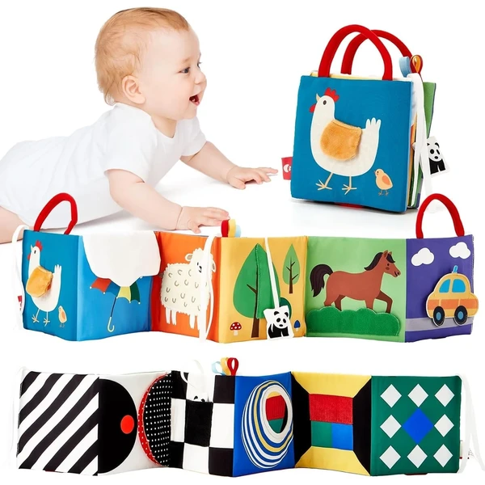

beiens Libro Interactivo con Colas de Animales
Un libro de tela suave con colas de animales texturizadas para tocar, papel arrugado que suena al pasar las páginas y colores vivos que llaman la atención del bebé. Se puede colgar en el cochecito o la cuna gracias a su cierre de velcro.
⭐ ¿Por qué nos gusta?
- ✔ Colas de animales con texturas distintas.
- ✔ Papel arrugado que suena al pasar página.
- ✔ Se cuelga fácilmente en cochecito o cuna.
💬 Lo que más destacan las familias
Muchos padres coinciden en que las colas texturizadas son lo que más engancha al bebé, ya que invitan a tocar cada página. El sonido crujiente del papel también mantiene el interés durante bastante tiempo.
Ver en Amazon

hahaland Libro con Cola de Animal
Un libro de tela con colas de animales que crujen y chirrían al pasar las páginas, con colores brillantes que llaman la atención del bebé desde el primer momento. Incluye correa de velcro para colgarlo en cualquier sitio.
⭐ ¿Por qué nos gusta?
- ✔ Colas de animales que crujen y chirrían.
- ✔ Colores brillantes muy llamativos.
- ✔ Correa de velcro para colgar en cochecito o gimnasio.
💬 Lo que más destacan las familias
Entre los comentarios más habituales aparece lo bien que funciona para mantener al bebé entretenido durante los paseos, gracias a la correa para colgarlo. La variedad de sonidos también se valora porque no cansa con el tiempo.
Ver en Amazon

Dr. Rapeti 6 Piezas Libros Blandos
Un set de 6 mini libros de tela con temáticas distintas: animales, frutas, verduras, transporte y números. Incluyen papel arrugado y botones chirriantes para estimular el oído mientras el bebé descubre cada tema.
⭐ ¿Por qué nos gusta?
- ✔ 6 libros con temáticas distintas incluidos.
- ✔ Botones chirriantes y papel arrugado.
- ✔ Tamaño pequeño, fácil de sujetar por el bebé.
💬 Lo que más destacan las familias
Se repite bastante el comentario de que la variedad de 6 temas distintos da para mucho tiempo de exploración sin repetirse. El tamaño pequeño de cada libro también se valora porque resulta más manejable para manos pequeñas.
Ver en Amazon

Vicloon Libro Blanco y Negro
Un libro de tela de doble cara con 12 patrones en blanco y negro, pensado para estimular la vista de los recién nacidos que aún distinguen pocos colores. Incluye un pequeño espejo integrado para despertar la curiosidad del bebé.
⭐ ¿Por qué nos gusta?
- ✔ Patrones en blanco y negro, ideales para recién nacidos.
- ✔ Incluye un pequeño espejo integrado.
- ✔ Correas para atarlo a la cuna o el cochecito.
💬 Lo que más destacan las familias
Lo que más suele gustar es que esté pensado específicamente para la vista de los recién nacidos, con el contraste en blanco y negro. El espejo integrado también despierta mucha curiosidad en el bebé.
Ver en Amazon

Vicloon Libro con León
Un libro de tela con diseño en blanco y negro y un sonido tipo "BB" incorporado que suena al agitarlo. Incluye asa para colgarlo fácilmente en el cochecito o el parque.
⭐ ¿Por qué nos gusta?
- ✔ Diseño en blanco y negro para estimular la vista.
- ✔ Sonido incorporado tipo "BB" al agitarlo.
- ✔ Asa para colgar en cochecito o parque.
💬 Lo que más destacan las familias
Muchos padres destacan lo fácil que resulta llevarlo de un lado a otro gracias al asa incorporada. El diseño en blanco y negro también se valora especialmente para los primeros meses del bebé.
Ver en Amazon

Fehn Libro de Tela Koala
Un libro de tela con animales del zoo en 8 páginas, que combina chirriador, sonajero, papel susurrante y un espejo integrado. Se sujeta fácilmente al cochecito o la cuna gracias a su anilla.
⭐ ¿Por qué nos gusta?
- ✔ Combina chirriador, sonajero y papel susurrante.
- ✔ Espejo integrado para el autoconocimiento del bebé.
- ✔ Anilla para sujetarlo a cochecito o cuna.
💬 Lo que más destacan las familias
Entre los comentarios más habituales aparece lo bien cuidados que están los materiales y acabados de esta marca alemana. La combinación de varios estímulos en un mismo libro también se valora frente a otros más simples.
Ver en Amazon

hahaland Libro Plegable Doble Cara
Un libro de tela con patrones en blanco y negro en un lado, ideales para los primeros meses, y colores vivos en el otro para bebés algo más mayores. Incluye papel arrugado, sonido y un espejo integrado.
⭐ ¿Por qué nos gusta?
- ✔ Doble cara: blanco y negro y colores vivos.
- ✔ Se adapta a distintas edades del bebé.
- ✔ Incluye espejo, sonido y papel arrugado.
💬 Lo que más destacan las familias
Lo que más suele gustar es que sirva para distintas etapas gracias a sus dos caras, alargando su vida útil. El diseño plegable con velcro también se valora porque facilita mucho guardarlo.
Ver en Amazon

hahaland Libro con Espejo y Mordedor
Un pack de 2 libros de tela con pies de animales texturizados, un espejo seguro para bebés y un mordedor con distintas texturas para masajear las encías. Combina lectura sensorial con alivio para la dentición.
⭐ ¿Por qué nos gusta?
- ✔ Incluye espejo seguro y mordedor a juego.
- ✔ Pies de animales con texturas 3D.
- ✔ Pack de 2 libros distintos incluidos.
💬 Lo que más destacan las familias
Una característica muy mencionada es lo práctico que resulta combinar el libro con un mordedor incluido, útil durante la dentición. El espejo también se valora porque mantiene entretenido al bebé más tiempo.
Ver en Amazon